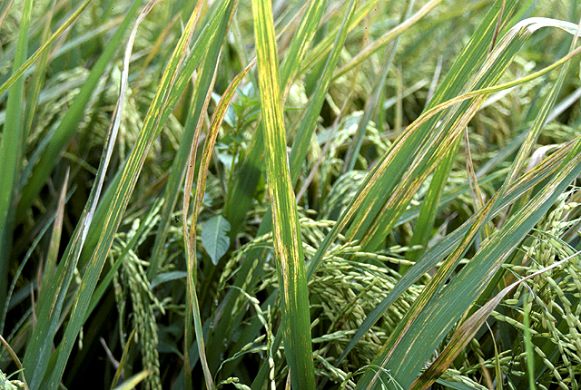
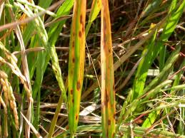
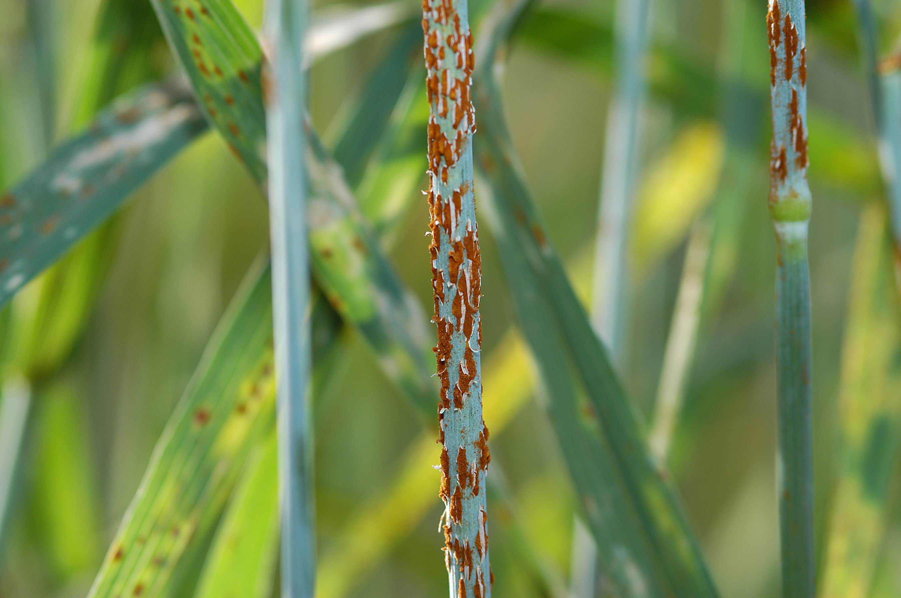
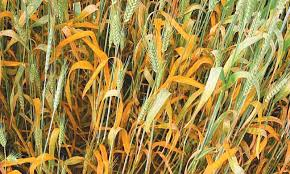
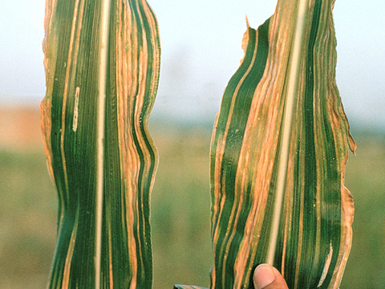
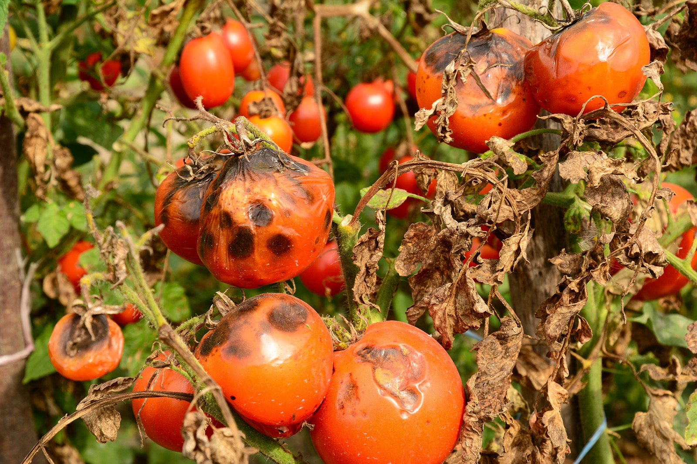

Plant Disease Library
Search and filter plant diseases to get detailed information.
🔎 Search Diseases and Crops
- 🌾 Rice Blast
- 💧 Bacterial Leaf Blight (Rice)
- 🌾Brown Spot (Rice)
- 🌾 Wheat Rust (Stem Rust)
- 🍂 Leaf Rust (Wheat)
- 🌾 Powdery Mildew (Wheat)
- 🌾 Karnal Bunt (Wheat)
- 🌽 Maize Downy Mildew
- 🌽 Maize Streak Virus
- 🥔 Late Blight (Potato/Tomato)
- 🍅 Early Blight (Tomato)
- 🍅 Tomato Leaf Curl Virus
- 🥒 Powdery Mildew (Cucumber)
- 🌶️ Fusarium Wilt (Tomato/Chili)
- 🥔 Bacterial Wilt (Potato/Tomato)
- 🥒 Mosaic Virus (Cucumber/Melon)
- 🌶️ Anthracnose (Chili/Tomato)
- 🥬 Clubroot (Cabbage/Brassica)
- 🍊 Citrus Greening (Huanglongbing)
- 🥭 Mango Anthracnose
- 🍈 Papaya Ringspot Virus
- 🍌 Banana Bunchy Top Virus
- 🍎 Apple Scab
- 🍇 Powdery Mildew (Grapes)
- 🍊 Citrus Canker
- 🌱 Yellow Mosaic Virus (Pulses)
- 💧Ascochyta Blight (Chickpea)
- 🌱Coffee Leaf Rust
- 🫖Tea Blight (Exobasidium)
- 🌾 Powdery Mildew (Sugarcane)
Cause:
Solution:
🔎 Search by Crop
- 🌾 Rice
- 🌽 Maize
- 🌿 Wheat
- 🥔 Potato
- 🍅 Tomato
- 🍆 Brinjal
- 🥒 Cucumber
- 🍊 Orange
- 🍌 Banana
- 🥭 Mango
- ☕ Coffee
- 🍵 Tea
🧫 Filter by Pathogen
- 🦠 Bacteria
- 🧬 Virus
- 🍄 Fungi
- 🪱 Nematodes
- 🌱 Phytoplasma
- 🧫 Blight (Phytophthora)
- 🧫 Rust (Puccinia)
- 🧫 Wilt (Fusarium)
- 🧫 Mosaic Virus
- 🧫 Leaf Spot (Alternaria)
Reason:
Control:
💡 You can find these fertilizers in Find Product section.
🌤️ Weather Update
📍 Location: Loading...
🌡️ Temperature: --°C
☁️ Condition: --
🌱 Recommended Crops for this weather ⬇
🌱 Find Crops by Your Budget

Increase your crop production with us
🌾 Crop Diseases Gallery
Not sure which disease is affecting your crop? Identify it easily using our comprehensive crop disease gallery.

🌾 Rice Blast

💧 Bacterial Leaf Blight (Rice)

🌾 Brown Spot (Rice)

🌾 Wheat Rust (Stem Rust)

🍂 Leaf Rust (Wheat)

🌽 Maize Downy Mildew

🥔 Late Blight (Potato/Tomato)

🍅 Early Blight (Tomato)

🌾 Powdery Mildew (Wheat)

🌾 Karnal Bunt (Wheat)

🌽 Maize Streak Virus

🍅 Tomato Leaf Curl Virus